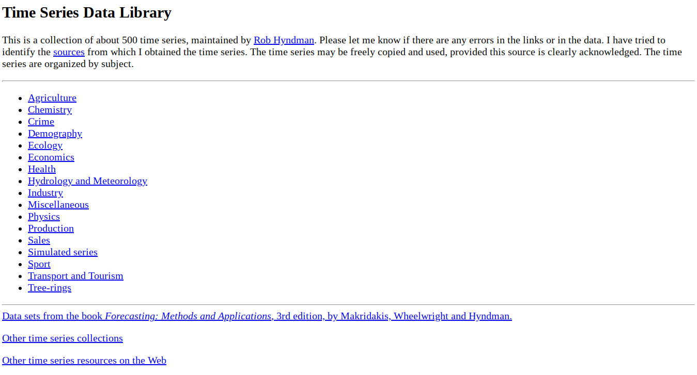
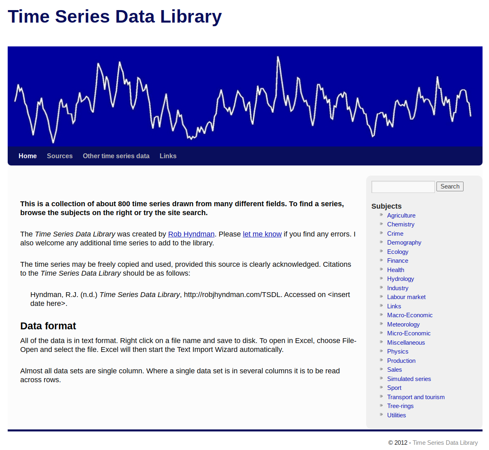
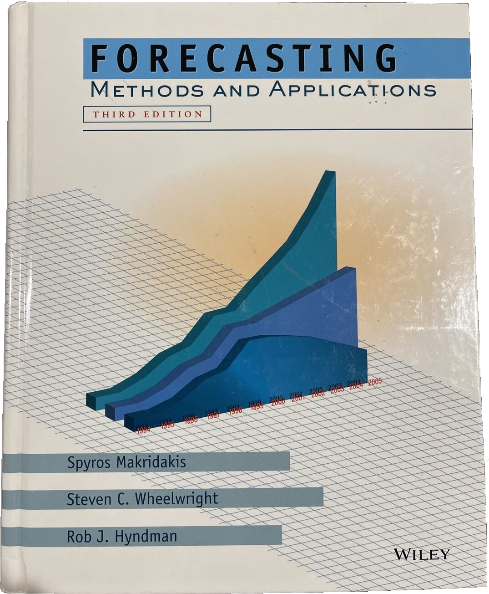
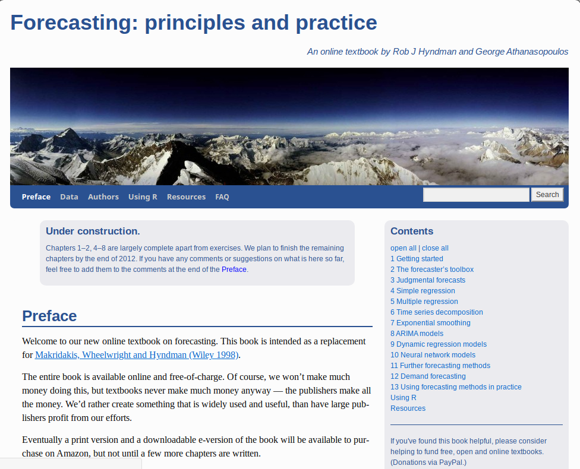
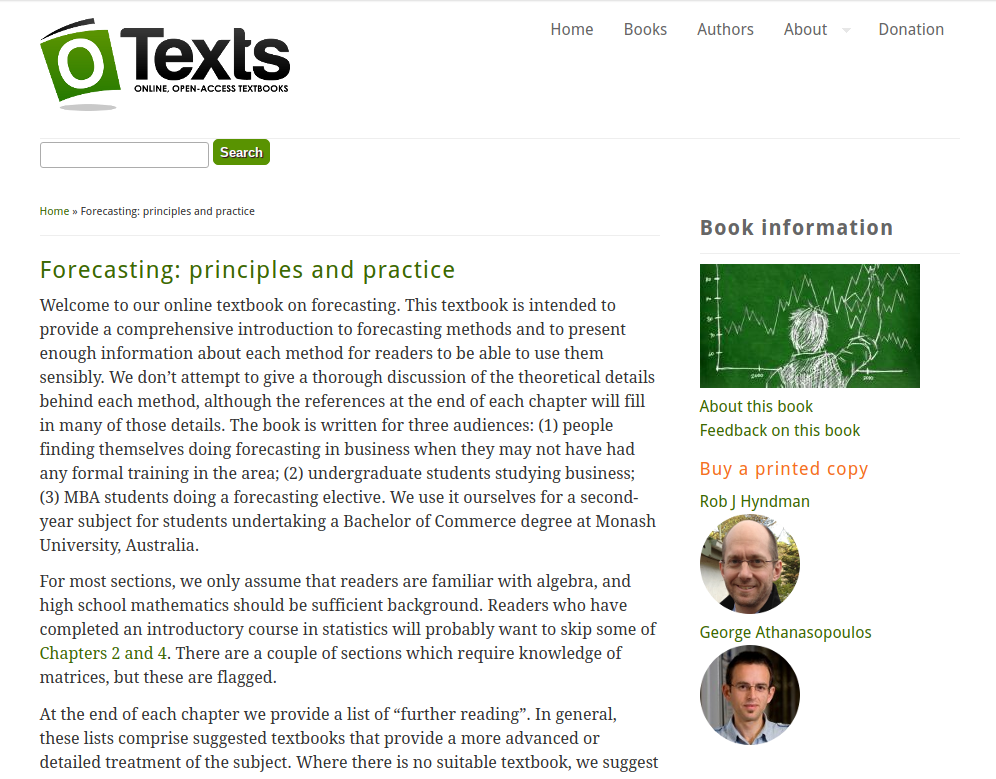
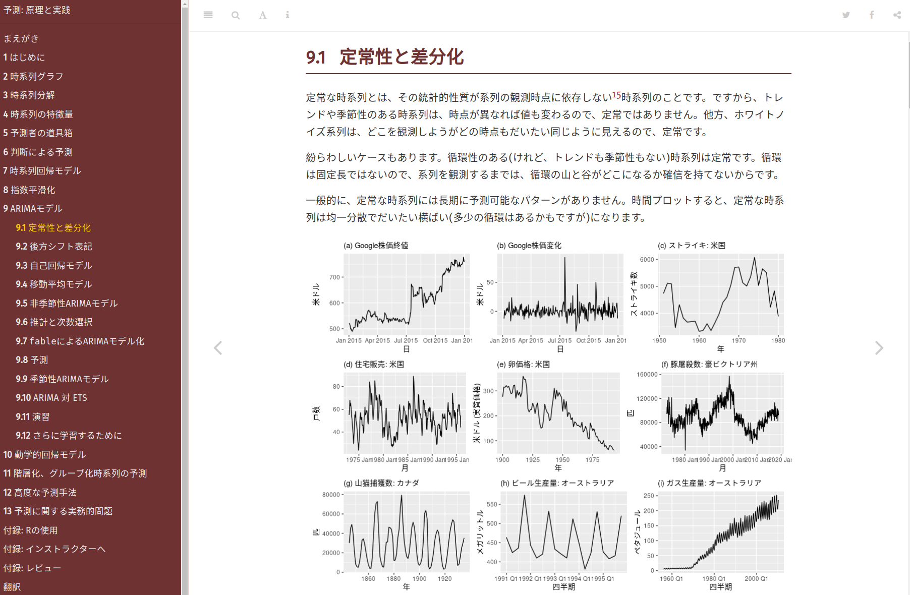
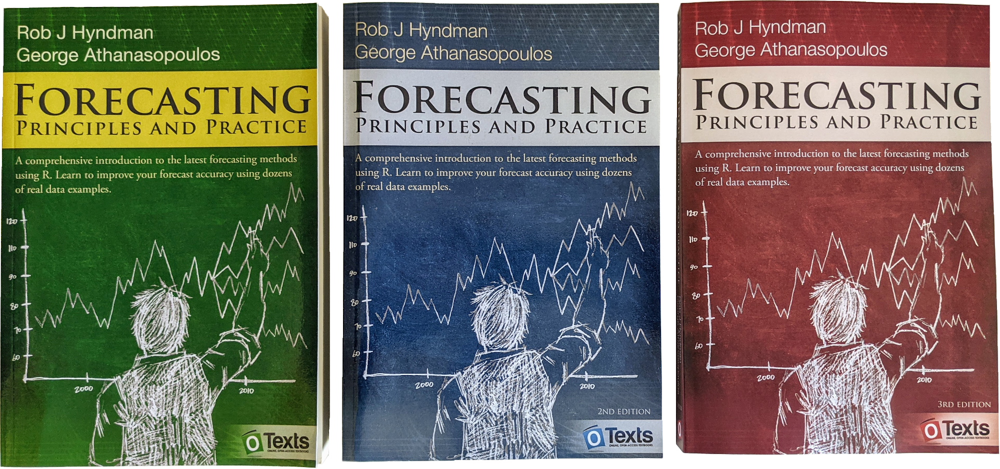
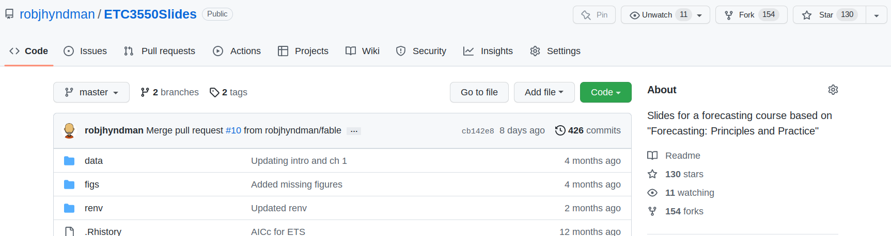
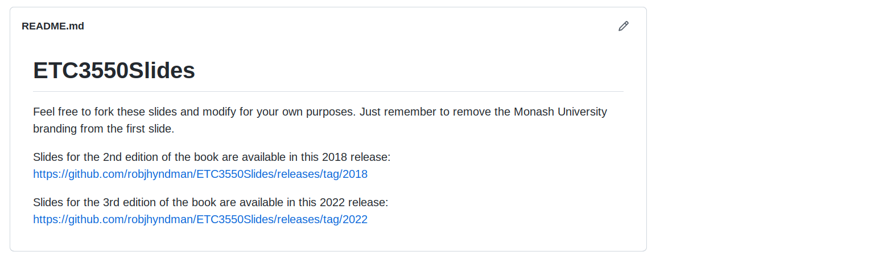
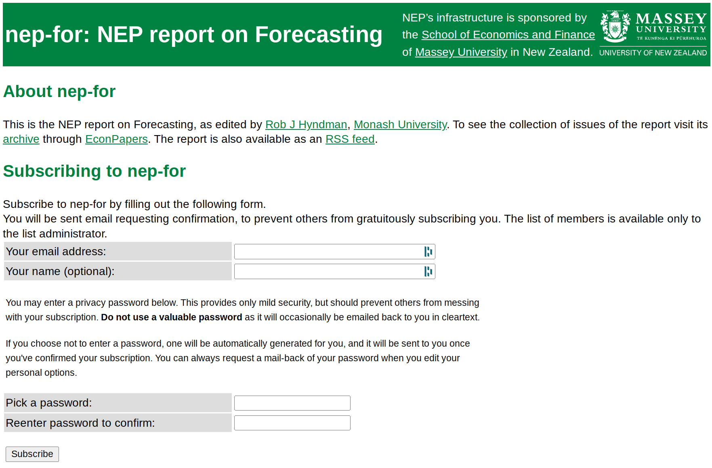

fma: |
Data from Forecasting: methods & applications (1998) |
expsmooth: |
Data from Forecasting with exponential smoothing: the state space approach (2008) |
fpp: |
Data from Forecasting: principles & practice (2013) |
fpp2: |
Data from Forecasting: principles & practice (2nd ed, 2018) |
fpp3: |
Data from Forecasting: principles & practice (3rd ed, 2021) |
Mcomp: |
Data from M and M3 competitions, with contributed forecasts |
tscompdata: |
Data from M, M3, NN3, NN5, NNGC1, tourism and GEFCom2012 competitions |
Creating social good for forecasters
Rob J Hyndman
Data sets
Large, open-access data sets:
- help forecasters test new methods
- allow easier empirical comparisons
- help generate interesting student exercises
Time series data library (1996)
Time series data library (2012)

Time series data library (2022)
Other R packages with data
forecastingdata.org
Software
Open source software:
- makes state-of-the-art forecasting methods available to everyone
- ensures new forecasting methods can be easily used
- influences the way people think about forecasting
Open source R packages
| ≤ 2002 | Collection of R functions used for consulting projects, available at robjhyndman.com |
| 2003 |
|
| 2004 | |
| 2005 | |
| 2006 | forecast v1.0 on CRAN |
| 2007 |
|
| 2008 | JSS paper (Hyndman & Khandakar) |
| 2009 | forecast v2.0 unbundled |
| 2010 |
|
| 2011 |
|
| 2012 |
|
| 2013 | Major speed-up of |
| 2014 |
|
| 2015 | New plots. forecast v6.0 |
| 2016 | ggplot2 graphics, bias adjustment, forecast v7.0 |
| 2017 | forecast v8.0 |
| 2018 | tsibble released on CRAN |
| 2019 | fable and feasts released on CRAN |
| 2020 | |
| 2021 | FPP3 textbook using fable published |
| 2022 | forecast v8.16, fable v0.3.1, feasts v0.2.2 on CRAN |
R package downloads

CRAN Task View: Time series analysis
Textbooks
Open-access textbooks:
- makes high quality forecasting materials available to everyone
- ensures new forecasting methods can be easily used
- influences the way people think about forecasting
My first book (1998)
Online publishing: FPP0
Online publishing: FPP1
Online publishing: OTexts.com/fpp2
Online publishing: OTexts.com/fpp3
FPP monthly readers

In past year:
- 27K page views per day
- 3K new users per day
To date:
- 40.6 million page views
- 5.4 million users
- from 209 countries
FPP translations

Translations:
- FPP2 available in Chinese and Korean
- FPP3 available in Japanese, Italian, Greek
- FPP3 translations underway in French, Spanish, Russian, Portuguese
Online publishing: in print
Education resources
Open-access education resources
- Improves forecasting education everywhere
- Equips non-experts to teach forecasting
FPP exercise solutions
Requested by 1183 instructors from 91 countries

Slides for a forecasting course


Research papers
Open-access research papers
- Makes latest research available to everyone
- Research ideas available earlier
- Allows for informal peer-review
Open-access research papers
- Bypass the journal pay-walls
- Every journal allows pre-prints to continue to exist online after a paper is accepted
- It reduces the risk of someone beating you – there is a public paper with a date on it.
- Most government funding agencies now require pre-prints to be made available.
- It increases your citations
- Many online repositories available: arXiv, RePEc, SSRN, …
NEP-FOR: weekly report
Questions
- Why do I do this?
- What could you contribute?
Why do I do this?
- I want to do things that are useful and have impact.
- Most of this activity increases citations of my papers.
- I get a lot of consulting requests and speaking invitations because people know me from my open source work.
What could you contribute?
- Add data to forecastingdata.org
- Good open source python packages
- Other online textbooks
- Forecasting educational resources: videos, activities, exercises, slides, …
- Put all your research papers on arXiv or RePEc
- Use reproducible practices and put your papers and code in public github repositories.
For more information
Slides and links: robjhyndman.com/seminars/f4sg2022
Social good for forecasters